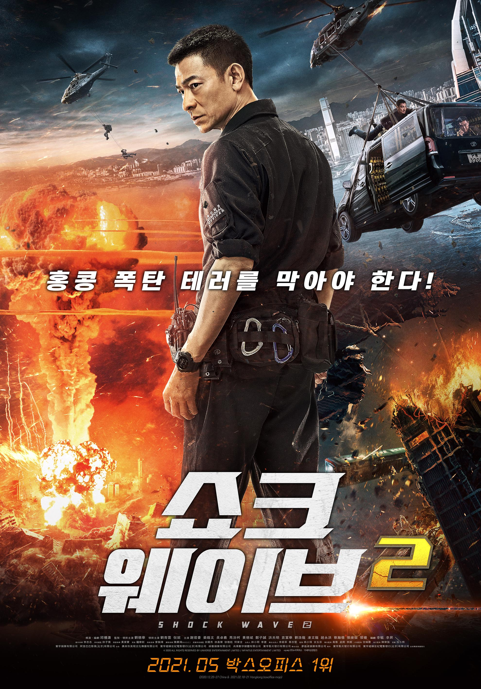

쇼크 웨이브 2
주요정보
뛰어난 폭탄 제거 요원 ‘판청펑’(유덕화)은 현장에서 예기치 못한 사고로 왼쪽 다리를 잃는다. 이로 인한 좌천 통보에 분노한 ‘판청펑’은 폭탄 제거반 동료 ‘둥저원’(유청운)과 애인인 ‘팡링’(니니)에게 등을 돌리고 자취를 감춘다. 5년 뒤, 홍콩의 한 호텔 행사장에서 폭탄 테러가 발생하고, 그곳에서 쓰러져 있는 그가 발견된다. 사고로 기억을 모두 잃은 채 깨어난 ‘판청펑’은 자신에게 극비 임무가 있었음을 알게 된다. 점점 세력이 커지는 테러 집단 ‘부활회’에 잠입해 그들의 계획을 알아내야 하는 것. 마침내 그들의 목적을 알게 된 ‘판청펑’, 그리고 폭탄 제거반, 반테러리즘 특수부대 팀은 세계에서 가장 작은 핵폭탄으로, 홍콩국제공항뿐 아니라 국제상업센터, 국제금융센터, 주요 지하철 역까지 모조리 쓸어버릴 계획에 경악한다.